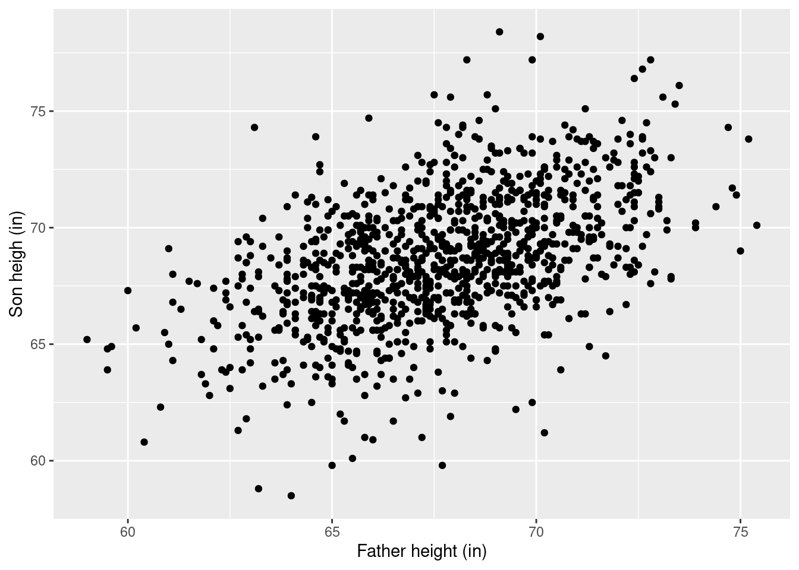
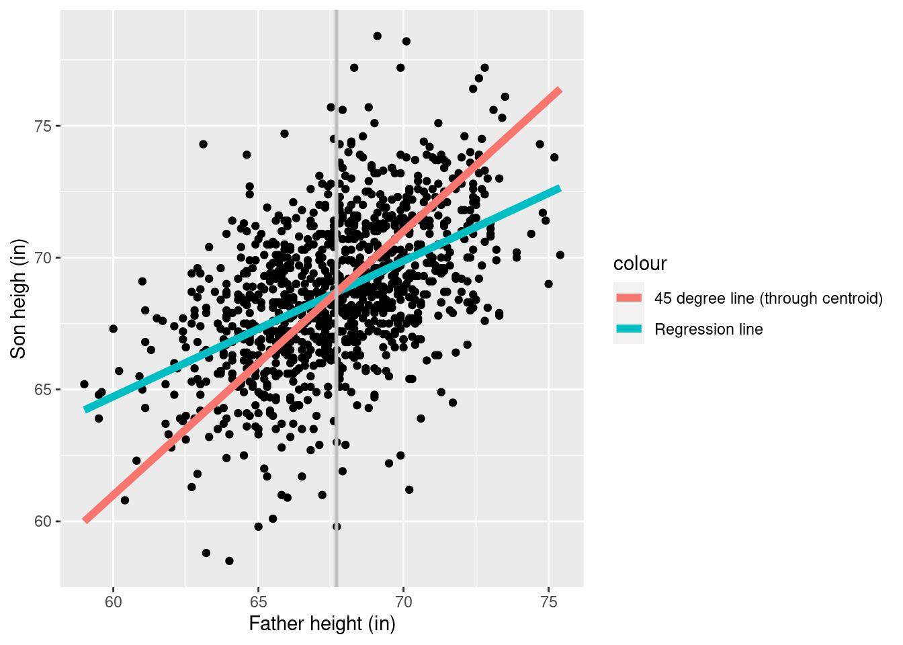
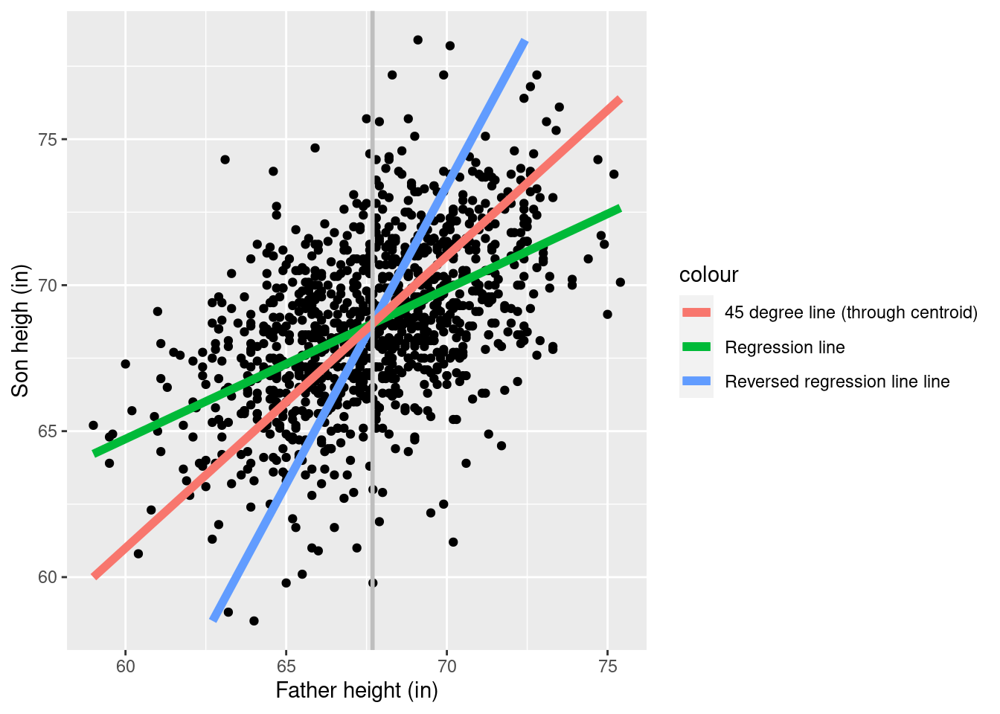

Regression to the mean
Goals
- Gain intuition for the phenomenon of regression to the mean
- Everyday intuition
- The asymmetry of OLS
- The effect on regression of noise in the regressors
Regression to the mean
Read Statistics (Freedman, Pisani and Purves) chapter 10 section 4.
Fathers and sons
We expect that a son is roughly the same height as his father. But if we run the regression
reg <- lm(Son ~ 1 + Father, pearson_df)
print(summary(reg))
Call:
lm(formula = Son ~ 1 + Father, data = pearson_df)
Residuals:
Min 1Q Median 3Q Max
-8.8910 -1.5361 -0.0092 1.6359 8.9894
Coefficients:
Estimate Std. Error t value Pr(>|t|)
(Intercept) 33.89280 1.83289 18.49 <2e-16 ***
Father 0.51401 0.02706 19.00 <2e-16 ***
---
Signif. codes: 0 '***' 0.001 '**' 0.01 '*' 0.05 '.' 0.1 ' ' 1
Residual standard error: 2.438 on 1076 degrees of freedom
Multiple R-squared: 0.2512, Adjusted R-squared: 0.2505
F-statistic: 360.9 on 1 and 1076 DF, p-value: < 2.2e-16
Are sons shrinking over time? In fact, note that we can run the regression the other way and get a similar result:
reg_reversed <- lm(Father ~ 1 + Son, pearson_df)
print(summary(reg_reversed))
Call:
lm(formula = Father ~ 1 + Son, data = pearson_df)
Residuals:
Min 1Q Median 3Q Max
-7.3309 -1.6468 0.0634 1.6200 7.1589
Coefficients:
Estimate Std. Error t value Pr(>|t|)
(Intercept) 34.12494 1.76815 19.3 <2e-16 ***
Son 0.48864 0.02572 19.0 <2e-16 ***
---
Signif. codes: 0 '***' 0.001 '**' 0.01 '*' 0.05 '.' 0.1 ' ' 1
Residual standard error: 2.377 on 1076 degrees of freedom
Multiple R-squared: 0.2512, Adjusted R-squared: 0.2505
F-statistic: 360.9 on 1 and 1076 DF, p-value: < 2.2e-16
Of course it cannot be the case that fathers are smaller than sons and sons are smaller than fathers.
What is going on? This is an example of two common phenoena:
- Regression to the mean
- Errors in regressors
Regression to the mean due to stationarity
Imagine a sequence of generations of fathers and sons numbered \(1,2,3\ldots\). Let the height of the individual in generation \(i\) be \(h_i\). Specifically, \(h_1, h_2\) form a father–son pair of heights.
Suppose that the marginal variance of heights is constant. Without loss of generality, we can take \(\var{h_i} = 1\) for all \(i\). For simplicity, we can also assume that \(\expect{h_i} = 0\), so that heights are measured relative to the overall mean.
What does this mean about the conditional mean \(\expect{h_{i + 1} | h_{i}}\)? Suppose that \(\expect{h_{i + 1} \vert h_{i}} = \beta h_{i}\), meaning that, on average, a son’s height is \(\beta\) times the father’s height.
\[ \begin{aligned} 1 ={}& \var{h_2} \\={}& \expect{h_2^2} \\={}& \expect{\expect{h_2^2 | h_1}} \\={}& \expect{\expect{h_2^2 | h_1} - \expect{h_2 \vert h_1}^2 + \expect{h_2 \vert h_1}^2} \\={}& \expect{\var{h_2 | h_1}} + \expect{(\beta h_1)^2} \\={}& \expect{\var{h_2 | h_1}} + \beta^2 \expect{h_1^2} \\={}& \expect{\var{h_2 | h_1}} + \beta^2 \Rightarrow\\ \beta ={}& \sqrt{1 - \expect{\var{h_2 | h_1}}}. \end{aligned} \]
This means that as long as there is some variability in the son’s height given the father (so \(\expect{\var{h_2 | h_1}} > 0\)), then \(\beta\) must be less than one, otherwise the variance of heights would be growing over time.
Regression to the mean as errors in variables
This motivates a different perspective on the same problem: errors in variables. Rather than modeling \(\expect{h_{i+ 1} | h_i}\) directly, a more reasonable model is that both \(h_i\) and \(h_{i + 1}\) are noisy measurements of the same quantity.
Suppose that fathers and sons come from a “lineage” \(n\), with heights \(h_{n1}\) and \(h_{n2}\) respectively. Let’s say that the father and son share a genetic propensity for tallness, \(\mu_n\), and that
\[ h_{n1} = \mu_n + \res_{n1} \quad\textrm{and}\quad h_{n2} = \mu_n + \res_{n2}, \]
where \(\res_{n1}\) and \(\res_{n2}\) are IID mean zero “errors,” or deviations from the shared “propensity.” If \(\mu_n\) is IID across \(m\) and independent of the errors, then
\[ \var{h_{ni}} = \var{\mu_n} + \var{\res_{n1}} = \sigma_\mu^2 + \sigma_\res^2 = 1 \]
so the “total” marginal variance of heights is decomposed into a component due to the variability in genetics (\(\sigma_\mu^2\))and the ideosyncratic variability of individuals (\(\sigma_\res^2\)). Note that
\[ \expect{h_{n1} | m} = \expect{h_{n2} | \textrm{lineage }n} = \mu_n, \]
so sons and fathers are the same height on average. However, if we regress \(h_{n2} \sim \beta h_{n1}\), we get
\[ \begin{aligned} \betahat ={}& \frac{\meann h_{n2} h_{n1}}{ \meann h_{n1}^2} \\={}& \frac{\meann (\mu_n + \res_{n2}) (\mu_n + \res_{n2}) } { \meann (\mu_n + \res_{n1})^2} \\={}& \frac{\meann \mu_n^2 + \meann \res_{n2} \mu_n + \meann \res_{n1} \mu_n + \meann \res_{n1} \res_{n2} } {\meann \mu_n^2 + \meann \res_{n1} \mu_n + \meann \res_{n1} \mu_n + \meann \res_{n1}^2 } \\\approx{}& \frac{\sigma_\mu^2}{\sigma_\mu^2 + \sigma_\res^2} < 1. \end{aligned} \]
Again, we see that \(\betahat\) must be less than one as long as there is some ideosyncratic variation, \(\sigma_\res^2 > 0\).
The asymmetry of regression
Although we regressed sons on fathers, we could have equally well regressed fathers on sons, and got exactly the same result. In other words, we have
\[ \expect{h_{n2} \vert h_{n1}} = \beta h_{n1} \quad\textrm{and}\quad \expect{h_{n1} \vert h_{n2}} = \beta h_{n2}, \]
for roughly the same \(\beta < 1\). Note that without the expectations this would be impossible! In fact, by ordinary algebra, if
\[ h_{n2} = \beta h_{n1} \quad\Rightarrow\quad h_{n1} = \beta^{-1} h_{n2}. \]
If \(0 < \beta < 1\), then we must have \(\beta^{-1} > 1\), in contradiction to our regression result. Mixing up the expectation estimated by regression and a deterministic algebraic result is the source of what may seem paradoxical about regression to the mean.
Error in variables
In fact, regression to the mean is a special case of a more general phenomenon of “errors in regressors.” In general, the problem looks like this.
Suppose you believe that \(\y_n = \betav^\trans \xv_n + \res_n\), but you don’t observe \(\xv_n\) directly. Instead, you observe
\[ \zv_n = \xv_n + \etav_n, \]
where \(\etav\) is a mean zero random error independent of everything else (in particular, of \(\res_n\)).
What happens if you regress \(\y_n \sim \gammav^\trans \zv_n\) instead of \(\xv_n\)? The answer is you bias the estimate of \(\beta\) by an amount determined by the covariance of \(\etav_n\). Specifically, if \(\etav_n\) has covariance \(\cov(\etav_n) = \V\), then
\[ \begin{aligned} \gammav ={}& \left(\Z^\trans \Z \right)^{-1} \Z^\trans \Y \\={}& \left((\X + \etav)^\trans (\X + \etav) \right)^{-1} (\X + \etav)^\trans (\X \betav + \resv) \\={}& \left(\frac{1}{N}\left(\X^\trans \X + \X^\trans \etav + \etav^\trans \X + \etav^\trans \etav \right) \right)^{-1} \frac{1}{N} \left(\X^\trans \X \betav + \etav^\trans \X \betav + \X^\trans \resv + \etav^\trans \resv \right). \\\approx{}& \left(\frac{1}{N} \X^\trans \X + \V \right)^{-1} \frac{1}{N} \X^\trans \X \betav. \end{aligned} \]